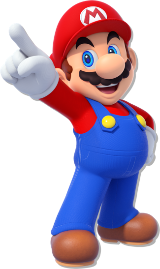
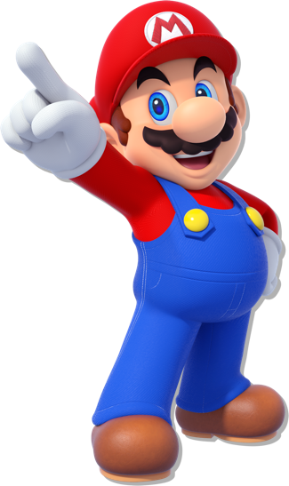
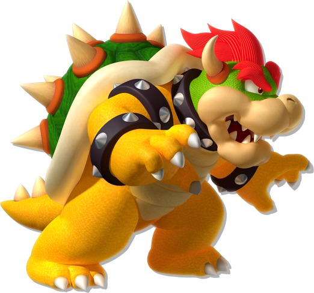
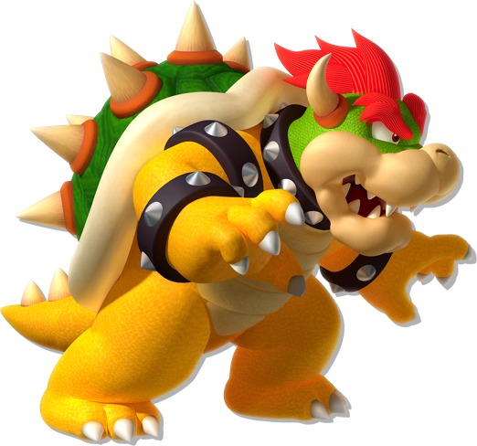

Share this site:
Customer SupportCharacters
From ravishing royalty to menacing monsters, the Mushroom Kingdom has had its share of memorable characters over the years...
From ravishing royalty to menacing monsters, the Mushroom Kingdom has had its share of memorable characters over the years...
 

Mario
MoreCheerful. Inspiring. Jumpy. Everyone loves Mario—and for good reason! The mustached one has been bravely battling bad guys for decades, and shows no signs of slowing down. He’s remarkably resilient for a plumber, smashing bricks and bouncing off walls like a parkour star. These amazing athletic skills are put to good use in a variety of sports, like tennis, baseball, soccer, and even auto racing. Mario may be a sporting superstar, but his main interest, of course, is keeping his beloved Princess Peach safe and away from the clutches of Bowser.


Luigi
MoreMario’s younger twin brother is a great guy, but he’s not exactly brave—and he’s really scared of ghosts! Like his big brother, though, he’s quick to lend his hand to those in trouble. His long legs make him a great jumper, perhaps even better than his more famous sibling.

Princess Peach
MoreThe princess of the Mushroom Kingdom is known for her gentle spirit and wishes only for everyone to live happily. For some reason, though, Bowser seems obsessed with marrying her, which can be a real nuisance. When she’s not being bothered by bad guys, Princess Peach enjoys baking cakes, playing tennis, and hanging out with her pal, Mario.

Toad
MoreToad is a resident of the Mushroom Kingdom who helps Princess Peach. He has lots of buddies who all look identical except for their different colored outfits. They’re all exceedingly cheerful hard-workers, too. Toad tries hard to protect Princess Peach from Bowser, but his small stature and tendency to flub things up usually force him to call on Mario for help.
 

Bowser
MoreThe king of the Koopas dreams of ruling the Mushroom Kingdom, and only Mario and his brave friends stand in his way! This towering tyrant commands many minions—including Koopa Troopas, Goombas, Bullet Bills, and Shy Guys—and together they wreak havoc upon the Mushroom Kingdom. He often stirs up trouble, but despite his monstrous strength and fiery breath, Mario and company always find a way to stop him.
Yoshi
MoreMario’s trusty steed from Yoshi’s Island has a kind and easygoing personality. He boasts a long tongue, which he uses to swallow fruits and enemies whole—and then lays eggs! In addition to Green Yoshi, there are equally adorable Yoshis in other colors like red, yellow, blue, and pink.
Princess Daisy
MoreThe princess of Sarasaland is bright, energetic, and a bit tomboyish. When the villainous Tatanga kidnapped her, Mario came to the rescue. Daisy is quite athletic, so she likes to take on Mario and friends in a variety of sports—and often comes out on top!

Wario
MoreWario claims to be Mario’s old friend, but he’s better known as Mario’s greatest rival. He has a bold personality—and bold breath to match! When he’s not serving as CEO of WarioWare, Inc., Wario likes to spend his spare time eating garlic and counting his coin collection.

Waluigi
MoreWario’s sidekick is an odd-looking fellow who views Luigi as his rival. He schemes in secret to defeat Mario and Luigi, but so far has found little success. He has long limbs, which gives him a big advantage in certain sports.
Share this site:
Customer SupportFollow Nintendo:
Game trademarks and copyrights are properties of their respective owners. Nintendo properties are trademarks of Nintendo. © 2019 Nintendo.